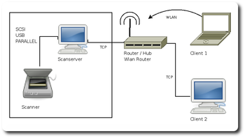
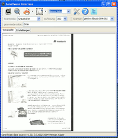

SANE-Scanserver im Netzwerk
Dieser Artikel wurde für die folgenden Ubuntu-Versionen getestet:
Ubuntu 16.04 Xenial Xerus
Ubuntu 14.04 Trusty Tahr
Zum Verständnis dieses Artikels sind folgende Seiten hilfreich:

Das besondere an SANE ist, dass es einen Dienst zur Verfügung stellt, welcher so konfiguriert werden kann, dass ein am Server angeschlossener Scanner (oder mehrere) im Netzwerk für andere Rechner transparent zur Verfügung steht. Dieses Programm heißt saned (sane daemon). Alle Funktionen des Scanners sind verwendbar, als wäre das Gerät direkt am Client angeschlossen. So ist zum Beispiel im Büro der zentrale Scanner auf allen vernetzten Rechnern und den mittels WLAN angebunden Notebooks verfügbar; auch über Virtuelle Maschinen lassen sich Scanner so verwenden. Die Konfiguration eines solchen Servers ist eigentlich nicht schwer - man darf nur die Übersicht über die verschiedenen Konfigurationsdateien nicht verlieren, deren Fülle letztendlich einen Tribut an die Sicherheit des Betriebs im Netzwerk darstellen.
Voraussetzungen¶
Die Grundvoraussetzungen zum Betrieb eines Scanservers ist natürlich ein funktionierender Scanner, der direkt am Scanserver angeschlossen ist. Alles dazu ist in Ubuntu vorinstalliert und muss nicht konfiguriert werden. Dies wird u.a. im Artikel Scanner beschrieben.
Es muss weiterhin folgendes Paket installiert [1] werden, welches den Scandaemon saned und das Terminalprogramm [2] scanimage enthält:
sane-utils
 mit apturl
mit apturl
Paketliste zum Kopieren:
sudo apt-get install sane-utils
sudo aptitude install sane-utils
Konfiguration des Servers¶
Hinweis:
Alle Konfigurationsdateien auf dem Server und auch den Clients müssen mit administrativen Rechten[3] editiert werden.
Seit Ubuntu 16.04 gilt folgende Vorgehensweise, da systemd verwendet wird. Gestartet wird saned nicht über /etc/default/saned sondern über zwei Dateien in /lib/systemd/system, saned.socket und saned@service. Der Socket lauscht dabei ständig am sane-port 6566 auf eingehende Requests, um nur im Bedarfsfall den Daemon zu starten. Ein manuelles Starten ist nicht mehr möglich, ein Versuch führt zu Fehlermeldungen, ist aber auch nicht nötig.
Mit
sudo systemctl status saned.socket
kann die Funktion des Sockets überprüft werden, die Ausgabe sieht in etwa so aus:
● saned.socket - saned incoming socket Loaded: loaded (/lib/systemd/system/saned.socket; enabled; vendor preset: enabled) Active: active (listening) since Mi 2016-05-25 16:46:07 CEST; 2h 17min ago Listen: [::]:6566 (Stream) Accepted: 0; Connected: 0 Mai 25 16:46:07 rechenername systemd[1]: Listening on saned incoming socket.
Falls der Socket nach dem Rechnerstart nicht aktiv sein sollte, hilft der Befehl
sudo systemctl start saned.socket
Um saned.socket gleich ab Systemstart laufen zu lassen, muss einmalig
sudo systemctl enable saned.socket
ausgeführt werden. Damit wird ein Symlink /etc/systemd/system/sockets.target.wants/saned.socket auf /lib/systemd/system/saned.socket gelegt. Wenn der automatische Start von saned.socket nicht mehr benötigt wird, kann das mit sudo systemctl disable saned.socket wieder abgestellt werden.
Sobald ein Programm den Dienst anfordert (z.B. XSane, oder scanimage), wird saned gestartet, aber sobald es nicht mehr benötigt wird, auch wieder beendet.
Bei z.B. laufendem XSane sieht eine Ausgabe von
sudo systemctl status saned@*.service
(das * ist wichtig!) in etwa so aus:
● saned@0-192.168.xxx.xx:6566-192.168.xxx.xx:38046.service - Scanner Service (192.168.xxx.xx:38046)
Loaded: loaded (/lib/systemd/system/saned@.service; indirect; vendor preset: enabled)
Active: active (running) since Mi 2016-05-25 18:47:01 CEST; 6min ago
Main PID: 2181 (saned)
CGroup: /system.slice/system-saned.slice/saned@0-192.168.xxx.xx:6566-192.168.xxx.xx:38046.service
└─2181 /usr/sbin/saned
Mai 25 18:47:01 rechnername systemd[1]: Started Scanner Service (192.168.xxx.xx:38046).
Mai 25 18:47:01 rechnername saned[2181]: saned (AF-indep+IPv6+systemd) from sane-backends 1.0.25git starting up
Mai 25 18:47:01 rechnername saned[2181]: check_host: access by remote host: ::ffff:192.168.xxx.xx
Mai 25 18:47:01 rechnername saned[2181]: init: access granted to saned-user@::ffff:192.168.xxx.xx(Mehr Einzelheiten im Forum.)
Frühere Ubuntu-Versionen¶
saned beim Systemstart starten¶
Der Netzwerk-Daemon saned wird standardmäßig nicht beim Hochfahren des Rechners gestartet. Dazu muss in einem Editor[4] mit Root-Rechten in der Datei /etc/default/saned auf allen verwendeten Rechnern der Eintrag
# Set to yes to start saned RUN=no
zu
# Set to yes to start saned RUN=yes
geändert werden. Auch ein Neustart hilft nicht, wenn die Datei nicht abgeändert wird. Dieser Schritt ist für 16.04 nicht notwendig.
Rechte für USB-Scanner anpassen¶
Bei USB-Scannern müssen ggf. auf dem Server die Zugriffsrechte für USB-Geräte in der Datei /lib/udev/rules.d/50-udev-default.rules in einem Editor mit Root-Rechten [3] von
# libusb device nodes
SUBSYSTEM=="usb", ENV{DEVTYPE}=="usb_device", MODE="0664"in
# libusb device nodes
SUBSYSTEM=="usb", ENV{DEVTYPE}=="usb_device", MODE="0666" geändert werden.
Achtung, diese Änderung kann bei einem Systemupdate überschrieben werden und muss ggf. neu gemacht werden.
Alternativ ist es auch möglich, den Benutzer[5] saned in die Gruppen plugdev und scanner aufzunehmen. Damit erhält dieser Benutzer Schreibrechte auf den Scanner. Für einige Multifunktionsgeräte kann es notwendig sein, saned ebenfalls in die Gruppe lp aufzunehmen.
Netzwerkzugriff für Clients freigeben¶
Hinweis:
Häufige Fehlerquelle - die Rechner, die den Scanner auf dem Server verwenden wollen, müssen explizit freigegeben werden.
In der Datei /etc/sane.d/saned.conf werden mit einem Texteditor die Hostnamen eingetragen, die auf den Scanserver zugreifen dürfen.
Einträge können zum Beispiel sein
192.168.0.5 # IP-Adresse für einen einzelnen Rechner rechner1.zuhause # Alias Name für einen einzelnen Rechner 192.168.0.0/24 # Alle Rechner mit Adressen 192.168.0.1 bis 192.168.0.254
Man sollte in jedem Fall die Verwendung des Scandienstes auf bekannte Rechner/Netze einschränken und niemals, wie teilweise zu lesen mit "+" global freigeben.
Konfiguration des Client¶
In der Datei /etc/sane.d/net.conf wird mit einem Texteditor die Netzwerkadresse desjenigen Rechners eingetragen, an dem der Scanner angeschlossen ist. Es können auch mehrere Scanserver angegeben werden.
192.168.0.5 # IP-Adresse für einen einzelnen Rechner meinserver1.zuhause # Aliasname einzweitersever.firma # Aliasname
SANE sucht dann auf all diesen Rechnern nach Scannern, was jedoch zu Wartezeiten auf dem Clientrechner führen kann. Hier sollte man also keine Netzwerkadressen für ganze Netzwerke (z.B. 192.168.0.0/24) angeben, sondern nur einzelne Rechner. In der Regel erfolgt die Erkennung dann innerhalb weniger Sekunden.
Ist der Rechner - oder gar mehrere - nicht erreichbar, so kann dies zu sehr langen Wartezeiten führen. Mit dem folgenden Eintrag in die /etc/sane.d/net.conf kann die Wartezeit auf z.B. 10 Sekunden pro Server festgelegt werden:
connect_timeout = 10
Experten-Info:
Konfiguriert man die Clientdateien auch auf dem Scanserver selbst, so erhält man zwei Scanner auf diesem Rechner. Einen, welcher direkt über das für den jeweiligen Scanner verwendete SANE-Backend (z.B. epson) auf den Scanner zugreift und einen, welcher über das lokale Netzwerk des Rechners zur Verfügung gestellt wird (SANE-Backend net:SERVER:...). Das kann für bestimmte Programme nötig sein, z.B. für SwingSane.
Testen¶
Im Terminal¶
Zum Testen in einem Terminal [2] verwendet man scanimage -L, hier ein Beispiel mit einem Epson-Scanner.
scanimage -L
ergibt am Scanserver folgende Ausgabe:
device `epson:/dev/sg2' is a Epson Perfection1200 flatbed scanner
und am Client:
device `net:server:epson:/dev/sg2' is a Epson Perfection1200 flatbed scanner
Um bei mehreren Geräten einen erkannten Scanner für den Test - oder auch für den Aufruf einer speziellen Anwendung wie scanimage - festzulegen, kann man global die Umgebungsvariable SANE_DEFAULT_DEVICE setzen oder einem Befehl voranstellen.
SANE_DEFAULT_DEVICE='net:server:epson:/dev/sg2'
In der grafischen Oberfläche¶
Zum Testen in der grafischen Oberfläche verwendet man ein beliebiges Scanprogramm.
Hinweis:
Bei der Verwendung des Passwortschutzes des saned muss bekannt sein, ob das jeweilige Programm diese Funktion unterstützt (bei dem Programm XSane ist dies z.B. der Fall, mit gscan2pdf gibt es damit Probleme).

Zugriff über SaneTwain von Windows-Clients aus¶
Der Zugriff funktioniert auch über Windows-Rechner (getestet mit Windows 7 (64-bit) und XP (32-bit)); dazu kann das Programm SaneTwain  verwendet werden. Auf dem Ubuntu-Server muss ggf. der eigene Benutzer in der Gruppe
verwendet werden. Auf dem Ubuntu-Server muss ggf. der eigene Benutzer in der Gruppe saned aufgenommen werden [5], damit der Zugriff dauerhaft erfolgen kann.
Im SaneTwain-Einstellungsdialog, der beim ersten Programmstart erscheint, muss die IP-Adresse des Servers angegeben werden, dann kann auf den/die angeschlossenen Scanner zurückgegriffen werden; ggf. auch der Benutzername des derzeit am Server angemeldeten Benutzers. Der Funktionsumfang der Software ist mit einfacheren SANE-Programmen vergleichbar, reicht aber nicht an XSane heran. Hier gilt außerdem, wie bei allen SANE-Programmen, dass der Funktionsumfang stark von Möglichkeiten der verwendeten Hardware abhängig ist. Nähere Einzelheiten zur Konfiguration und Benutzung findet man auf der Projektseite.
Für Mac-Clients sollte der Zugriff über das Programm Twain-Sane erfolgen können (nicht getestet!).
XSane für Windows¶
Es existiert auch eine Windows-Version von XSane, die den gesamten Umfang der Linux-Version zur Verfügung stellt (OCR ausgenommen). Die Verlinkung auf der XSane-Projektseite ist nicht mehr aktuell, auf Oliver Reichs Seite ist die zip-Datei gar nicht mehr greifbar. Man kann sie aber über XSane for Windows  beziehen. Das Zip-Archiv muss entpackt und nach c:\sane verschoben werden, nach Anpassung der net.conf-Datei in c:\sane\etc\sane.d\ (Angabe der IP des Servers) kann XSane über Ausführen von c:\sane\bin\xsane.exe gestartet werden. Details zum Programm selbst in XSane.
beziehen. Das Zip-Archiv muss entpackt und nach c:\sane verschoben werden, nach Anpassung der net.conf-Datei in c:\sane\etc\sane.d\ (Angabe der IP des Servers) kann XSane über Ausführen von c:\sane\bin\xsane.exe gestartet werden. Details zum Programm selbst in XSane.
Alternativen zu XSane und SaneTwain¶
Da XSane für Windows schon sehr veraltet ist und die Unterstützung von SaneTwain für Windows in der 64-bit-Version nicht gewährleistet werden kann, hier noch eine Alternative. Die Software heißt SaneWinDS und funktioniert auch unter Windows 8.1 mit 64 bit SaneWinDS, Download bei Sourceforge . Es können die Tasten am Scanner genutzt werden, um einen neuen Scanvorgang auszulösen und kontinuierlich in ein PDF-File zu speichern.
Eine weitere Alternative ist SwingSane, mit dem SANE-Netzwerk-Scanner unter Linux, Windows und OS2 verwendet werden können.
Problemlösungen¶
Hinweis:
Wenn ein Scanprogramm vom Server oder einem der Clienten aus auf den Scanner zugreift, wird er normalerweise von anderen Rechnern solange nicht gefunden, bis das jeweilige Programm beendet ist!
Benutzer in saned-Gruppe aufnehmen¶
Ggf. ist es allgemein nötig, den aktuellen Benutzer auf dem Server mit in die Gruppe saned aufzunehmen, damit der Zugriff von den Clienten auf den Scanner möglich ist. Ggf. ist es trotz Aufnahme auch nötig, in /etc/default/saned (s.o.) den Eintrag RUN_AS_USER=saned in RUN_AS_USER=BENUTZENAME umzuwandeln.
Portfreigabe im Netzwerk¶
Bei aktuellen Ubuntu-Versionen ist die Freigabe standardmäßig aktiviert, ggf. auf dem Server die Datei /etc/services überprüfen. Es muss folgender Eintrag vorhanden sein, ansonsten nachtragen:
sane-port 6566/tcp sane saned # SANE network scanner daemon
Wie viele andere Netzwerkdienste ist saned hier einer speziellen Netzwerk-Portnummer (6566) zugeordnet, wodurch er über das TCP-Netzwerkprotokoll angesprochen werden kann. Aus Sicherheitsgründen ist der saned-Daemon über die saned-Gruppe abgesichert. Damit ist das Protokoll, welches SANE benutzt, auch im Netzwerk ansprechbar.
Experten-Info:
Neben dem Port 6566 verwendet der Scandaemon saned einen weiteren Datenport, welcher vom jeweiligen Betriebssystem festgelegt wird - nachzulesen in der Manpage von saned. Deswegen müssen ggf. bei älteren Ubuntuversionen alle Ports auf dem Server größer 1024 für einkommende Datenverbindungen von Clients freigeschaltet werden. Bei der Verwendung z.B. von guarddog als Firewall für Ubuntu hat die benutzerdefinierte Freigabe des Port 6566 völlig zur einwandfreien Funktion ausgereicht; in einem FritzBox-Netzwerk ist keine Freigabe erforderlich.
SANE-Netzwerkbackend aktivieren¶
In aktuellen Ubuntu-Versionen ist der Netzwerktreiber schon aktiviert. Ggf. die Datei /etc/sane.d/dll.conf überprüfen, die bestimmt, welche SANE-Backends aktiv sind. Das für das Netzwerk zuständige Backend heißt net und bewirkt, dass nach Netzscannern gesucht wird. In der Datei /etc/sane.d/dll.conf muss also die Zeile
net
eingetragen und nicht mit einem "#" am Anfang auskommentiert sein.
Experten-Info:
Gelegentlich wird das Gerät nicht mehr unter der ursprünglichen Geräteadresse - z.B. /dev/sg2 - gefunden. Dies kann passieren, wenn das Gerät z.B. vom SCSI- oder USB-Bus getrennt und neu angeschlossen wurde, und dann unter einer anderen Geräteadresse geführt wird, z.B. /dev/sg3. Kommt dies öfter vor, so empfiehlt es sich, eine udev-Regel anzulegen, welche auch beim "Reconnect" eine eindeutige Gerätedatei erzeugt (z.B. /dev/epson1250 für einen Epson Scanner). Der Artikel udev erklärt die Vorgehensweise ausführlich.
Wird der Scanner auch dann nicht gefunden, so geht man folgendermaßen vor:
Prüfen, ob der Scanner am Scanserver funktioniert (siehe Testen). Es kann auch sinnvoll sein, verschiedene Benutzer zu testen, ob sie auf dem Scanserver auch den Scanner sehen können. So sollte man den Test zuerst mit
rootmachen danach mit einem anderen Benutzer.Netzwerkverbindung prüfen.
Steckverbindungen o.k.?
Firewall aktiv und Port 6566 nicht freigegeben? Zum Beispiel in einem Terminal [2] den Server vom Client aus an
pingen oder mittelnetdie Verbindung zum Port 6566 prüfenping IPdesScanServers
telnet IPdesScanServers 6566
Wurde nach dem Editieren der Konfigurationsdateien der
sanedgestartet bzw. neu gestartet (nicht unter 16.04)?Anleitung von vorne nochmal Punkt für Punkt durchgehen.
Weiterführende Hinweise findet man in den Links auf der Seite über den "SANE Network Daemon".
Sicherheitsaspekte¶
Firewall¶
Zur generellen Empfehlung, wie beim Einsatz einer Firewall vorzugehen ist, wurde schon weiter oben hingewiesen. Es muss der Port 6566 geöffnet sein.
Passwortschutz¶
Den Scandaemon saned auf dem Server kann man seit der SANE-Version 1.0.4 für einzelne Benutzer und Scanner passwortgeschützt betreiben. Dies gilt für Zugriffe mit dem Programmen scanimage und XSane, andere Scanprogramme sollten erst auf die Zusammenarbeit mit dieser Funktionalität hin getestet werden.
Dazu muss die Konfigurationsdatei /etc/sane.d/saned.users erstellt werden. In dieser kann zeilenweise einem Benutzer ein Passwort zugeordnet werden. Das Passwort kann 127 Zeichen lang sein (kein \r, \n, \000 erlaubt). Hier am Beispiel eines Epson-Scanners und des Benutzers joe.
# /etc/sane.d/saned.users # benutzername:password:backend joe:mein*sicheres+passwort:epson
Damit Benutzer das Passwort nicht immer wieder eintippen müssen, können sie in ihrem Heimatverzeichnis in einem versteckten Unterverzeichnis .sane in der Datei pass das Passwort speichern. Dazu muss sowohl der Benutzername, als auch die genaue Bezeichnung des zu verwendenden Scanners angegeben werden. Letzteres erfährt man über die Eingabe von scanimage -L in einem Terminal [2] auf dem Client.
# ~/.sane/pass # benutzername:password:ressource joe:mein*sicheres+passwort:net:server:epson:/dev/sg2
Wichtig: Damit diese Datei nicht von anderen gelesen werden kann, sollte man die Rechte[6] zum Lesen und Schreiben der Datei pass unbedingt auf den eigenen Benutzer beschränken, z.B. in einem Terminal [2]:
chmod 0600 ~/.sane/pass
Um serverseitige Attacken zu verhindern, sollte das Programm scanimage in Zusammenhang mit der Verwendung des Passwortschutz mit dem Parameter --accept-md5-only aufgerufen werden. Für andere Programme sind keine ähnlichen Vorgehensweisen bekannt. Ebenso ist es klug, für den Scannerzugriff ein anderes als das reguläre Benutzerpasswort zu verwenden!
Hinweis:
Der weitere Punkt setzt profundes Wissen voraus oder zumindest eine eingehende Beschäftigung mit dem Thema. Er ist für die als getestet angegebenen Ubuntu-Version nicht getestet!
TCP-Wrapper¶
Der Betrieb eines Rechners, welcher auch mit dem Internet verbunden ist birgt immer die Gefahr eines Angriffs in sich. Da der Internet-Superserver inetd viele Dienste zur Verfügung stellt, macht er das System dementsprechend anfällig für Attacken. Es sei deshalb auf die Möglichkeit der Verwendung eines TCP-Wrappers verwiesen. saned lässt sich aber in aktuellen Ubuntuversionen ganz ohne Internet-Superserver betreiben, in 16.04 ist die Verwendung von systemd Standard.
Links¶
Scanner und Software - Installation von Scannern und Scannersoftware
Artikel Einrichtung von saned
 , geht auch auf ältere Versionen und Verwendung von xinetd/inetd ein
, geht auch auf ältere Versionen und Verwendung von xinetd/inetd einArtikel der Zeitschrift CT aus dem Jahr 1999
- Älterer, aber grundsätzlich wertvoller und stimmiger Artikel zum Thema Scanning HowTo
- Ubuntu Community Documentation SANE Homepage
- Links aus der saned-ManpageSANE Network Daemon
- für Fortgeschrittene, gute Hinweise zum Absichern des saned (Passwortschutz) und zum Troubleshooting SaneTwain
- Windows-Client für SANE-ServerTwain-Sane
- Mac-Client für SANE-Serverswingsane - Java-Programm zur Nutzung von SANE-Netzwerkscannern
- Erstellt mit Inyoka
-
 2004 – 2017 ubuntuusers.de • Einige Rechte vorbehalten
2004 – 2017 ubuntuusers.de • Einige Rechte vorbehalten
Lizenz • Kontakt • Datenschutz • Impressum • Serverstatus -
Serverhousing gespendet von